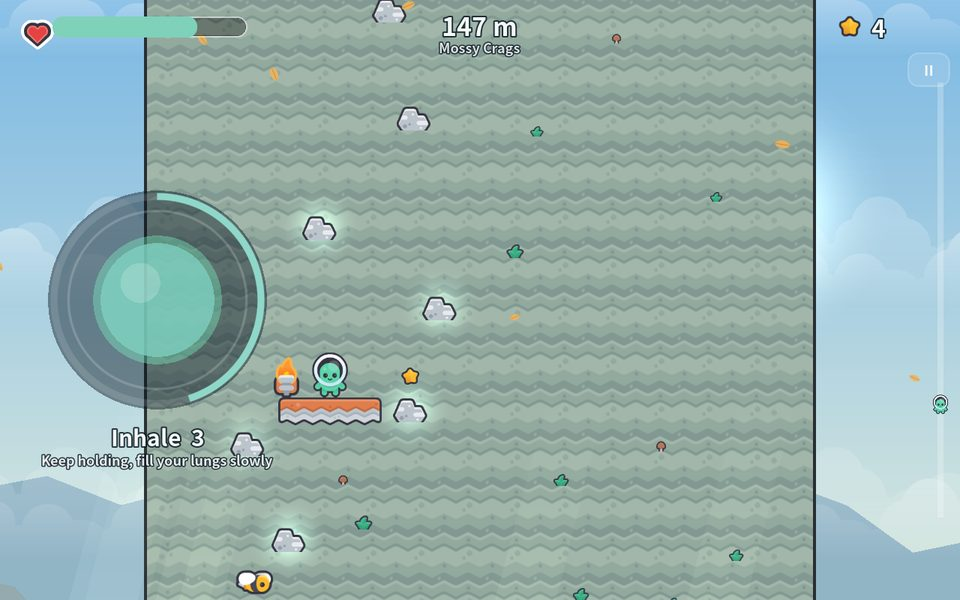
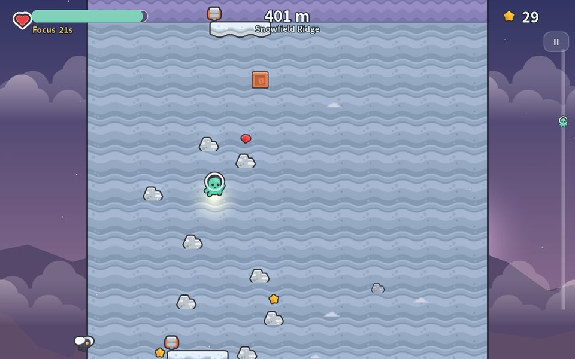
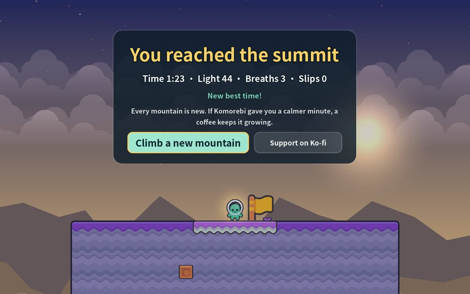

Komorebi
A calm climbing game you play free in your browser.
Pick your holds, rest at lantern ledges, breathe in for 4, hold for 7, out for 8 — and reach the summit.

▶ Play free in your browser

Or just breathe for a minute
The orb above runs the same 4-7-8 rhythm as the lantern ledges in the game. Komorebi is free to play. If it gives you a calmer minute, a coffee keeps development going.
What it is
Komorebi (木漏れ日, sunlight filtering through leaves) is a climbing game about pacing yourself. Every run is a newly generated mountain. Click or tap a glowing hold (or use the arrow keys) to reach for it. Every grip costs a little Calm, and if you run out you slip back to the last lantern you lit.
- Lantern ledges: hold to breathe in, keep holding, let go to breathe out. One real 4-7-8 breath restores your calm and grants Focus, which slows the drain.
- Five zones, from Sunlit Foothills to the Sea of Clouds, with the sky moving from morning to a starry dusk as you climb.
- Side routes hide sunlight, gems and hearts. Crumbling holds, bees and falling rocks keep you honest.
- Mouse, touch, keyboard or gamepad. English, 繁體中文 and 日本語.
Made in Godot 4.3. Art and sound effects by Kenney (CC0).
Follow along
Play the free demo, and if it earns a quiet moment, you can leave a tip on Ko-fi — that directly funds the full build and a Steam release. Development is public on GitHub.
Built by @slashman413 · Support on Ko-fi